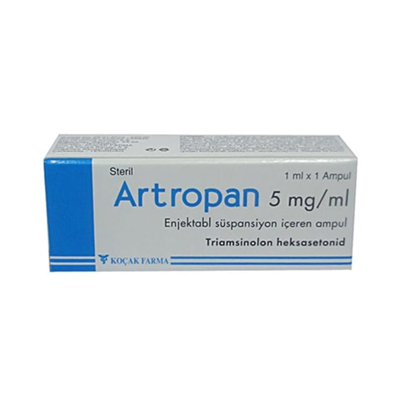

Artropan 5 mg/ml Enjeksiyonluk Süspansiyon, 1 Ampul

Ne için kullanılır
KT · Bölüm 1ARTROPAN, etkin maddesi bir kortikosetroid olan triamsinolon heksasetonid içeren bir ampuldür. Her 1 ml’sinde 5 mg triamsinolon heksasetonid içeren 1 ml’lik ampullerde, 1 ve 10 adet ampul içeren ambalajlarda piyasaya verilmiştir. Saç dökülmesi ve çeşitli cilt hastalıklarında (diskoid lupus eritematozus, keloitler, granuloma anularenin lokalize hipertrofik, infiltre, inflame lezyonları, lichen planus, lichen simplex kronikus ve lokalize inatçı psoriatik plaklar ve nekrobiyozis lipoidika diabetikorum) lezyon içine uygulanarak kullanılır.